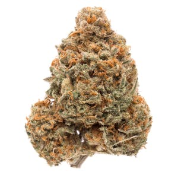

ACDC is a phenotype of the high-CBD strain Cannatonic (also known as the CBD Queen)
that was
selected by Dr. William Courtney after receiving a packet of seeds from its original
breeder, Spain-based Resin Seeds.
The resulting ACDC, which is only available on the market as a clone, is
exceptionally high
in CBD, with a 20:1 CBD-to-THC ratio, according to testing from SC Labs. Resin Seeds
describes the plant’s aroma as a mix of cherry, diesel, gas, and Mandarin peel.
Myrcene is a
dominant terpene in ACDC.
ACDC is a parent to several CBD-rich hybrids. Sin City Seeds offers four ACDC
hybrids with
varying CBD-to-THC ratios — Thunderstruck (an S1 hybrid of ACDC and ACDC), Treasure
Island
(Swiss Gold and ACDC), HarleSin (ACDC and Harlequin), and Incredible Power (OmRita,
BluePower, and ACDC).
Other notable hybrids include TOCI (ACDC and Xena), EMT (ACDC and Canna-Tsu) from
Med Tree
Seeds, Valhalla (ACDC and Sky Dragon) from Love Genetics, and CBD Rich Blessing from
Bodhi
Seeds. A hybrid of ACDC and a CBD-rich Good Medicine male, CBD Rich Blessing has, in
turn,
been used by its breeder to cultivate several other CBD-rich hybrids.
The strain reportedly grows to average height, producing thin leaves and medium
yields of
big, dewy buds. The strain grows best indoors and in warm environments. It’s
reported to
flower in 63-70 days, possibly longer in colder areas. ACDC can be finicky, so
novice and
intermediate growers with limited grow space may want to look elsewhere for a
high-CBD
plant.
The ACDC clone typically produces short, bushy plants with thin leaves that tend to
grow
about four feet tall. An ACDC clone Harborside submitted for genetic testing by
Phylos
Bioscience showed moderate levels of genetic variation.